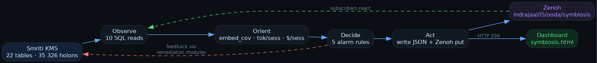
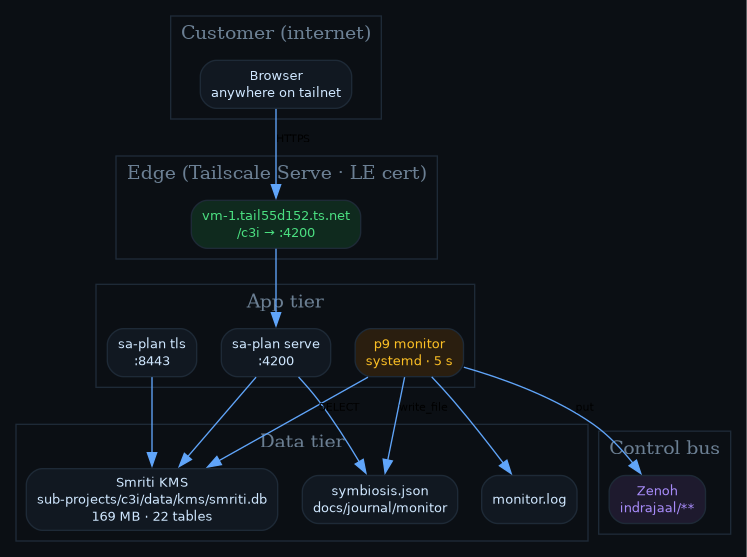

Closed-loop ZK ↔ Pi ↔ Agent dashboard · live at vm-1.tail55d152.ts.net
shippedGleam + systemd + Tailscale LE3–20 ms tickzero deps
scroll ↓
sub-projects/c3i/sa-plan was a stale Apr-21 binary — new daemon code never ran.c3i-context.json. Every agent loads at boot. Never re-search.
Gleam monitor ticks observe / orient / decide / act every 5 s.
Tailscale Serve gives /c3i/ a real Let's Encrypt cert.
Static HTML polls JSON snapshot every 2 s — no backend code changes.

scripts/pass9/p9_symbiosis_monitor · 350 LOC · reuses kms.gleam / nif.gleam
| Alarm | Condition | Remediation module |
|---|---|---|
| EMBED_LOW | embeddings / holons < 50 % | p8_04_embed_backfill |
| COST_HIGH | cost / session > $ 5 | p8_06_budget_middleware + p8_13_moe_router |
| TURN_SPANS_EMPTY | pi sessions > 0 but no spans | p8_19_per_turn_spans |
| CACHE_HIT_LOW | hit < 30 % on ≥ 1 k tok | p8_01_prefix_cache_warmer + p8_02_semantic_cache_fuzzy |
| PI_NO_TURN_TRACE | pi sessions exist, 0 spans | wire Pi middleware |
| Asset | URL |
|---|---|
| Live dashboard | /c3i/task-id/any/monitor/symbiosis.html |
| JSON API | /c3i/task-id/any/monitor/symbiosis.json |
| Journal | journal.md |
| Analysis | analysis.html |
p8_19_per_turn_spans into Pi → closes PI_NO_TURN_TRACEp8_04_embed_backfill → drives embed coverage > 90 %p8_06_budget_middleware → cost / session < $ 2history.ndjson → 24 h sparkline strip on dashboardsession_metrics.agent (claude / pi / gemini / codex)